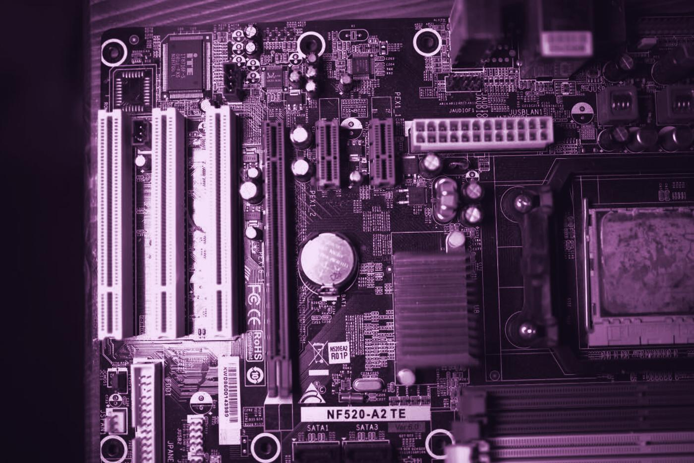
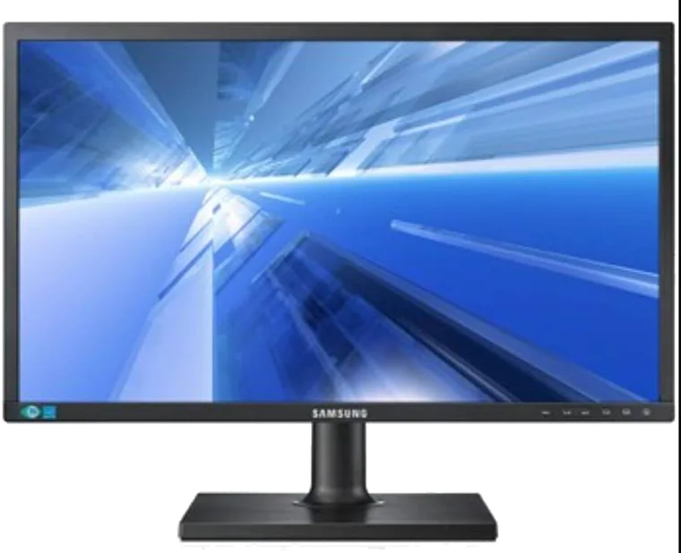
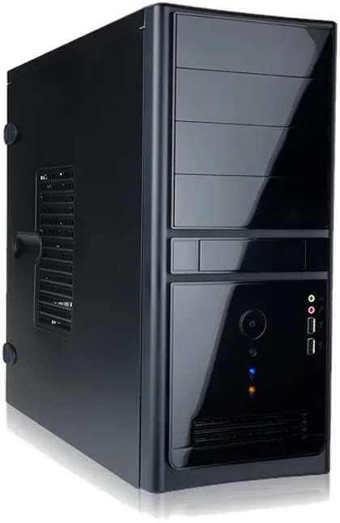
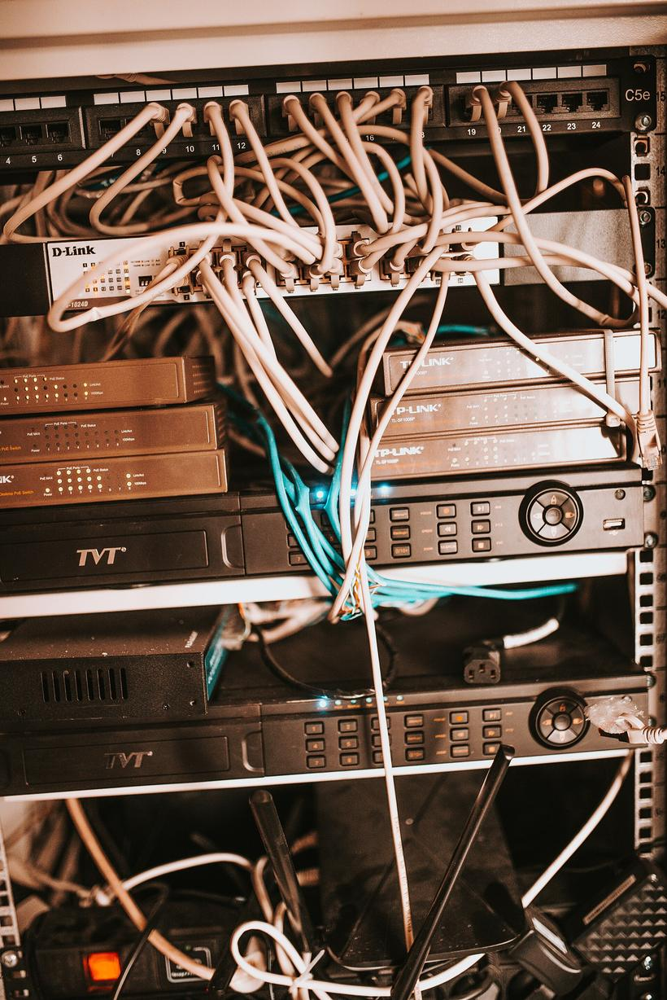
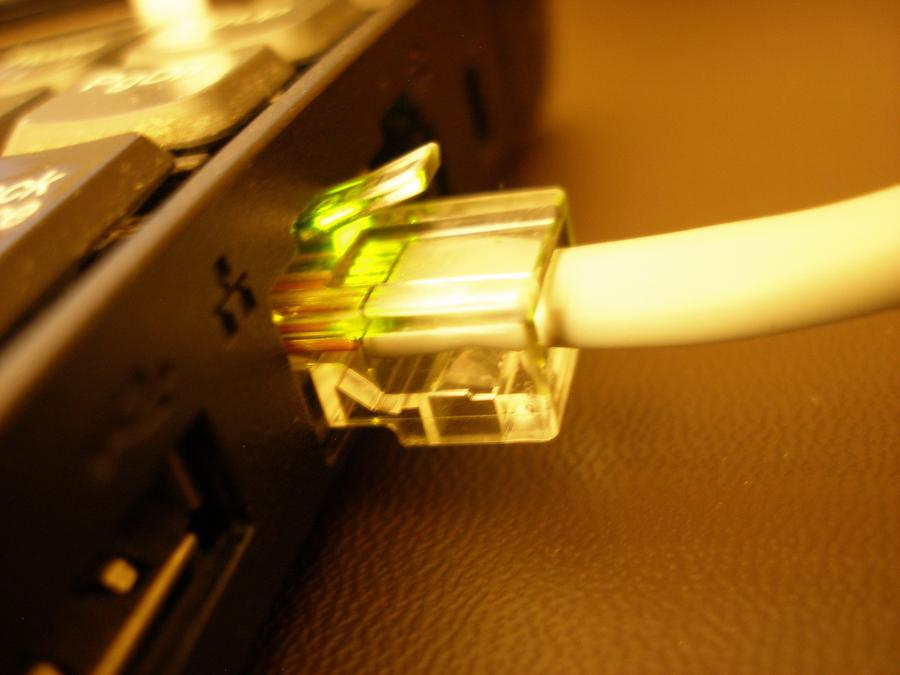

תיקון מחשביםComputer repair
מביאים את המחשב לחנות, והוא עולה על שולחן העבודה.Bring the computer in, and it goes up on the workbench.
קונספט לדוגמה שנבנה עבור טופקום מערכות מחשוב · זה אינו האתר הרשמי של העסקA sample concept built for TopCom Computer Systems · This is not the business’s official website
טופקום מערכות מחשוב, קריית אתא: שירות, מכירה ורשתות מחשבים. 5.0 בגוגל מ-17 ביקורות.TopCom Computer Systems, Kiryat Ata: service, sales and computer networks. 5.0 on Google from 17 reviews.
חנקין 2, קריית אתא
שלושת התחומים של טופקום, תחת קורת גג אחת.TopCom’s three trades, under one roof.

מביאים את המחשב לחנות, והוא עולה על שולחן העבודה.Bring the computer in, and it goes up on the workbench.


גם מכירה, לא רק תיקון.Sales too, not only repair.

כבלים, מתגים וחיבורים.Cables, switches and connections.
5.0
קריית אתא. מביאים את המחשב ומדברים פנים מול פנים.Kiryat Ata. Bring the computer in and talk face to face.
חנקין 2
5.0 בגוגל, מ-17 ביקורות. הנה חמש מהן, במילים של הכותבים.5.0 on Google from 17 reviews. Here are five, in the writers’ own words (translated from Hebrew).
״הבאתי מחשב מקולקל בבוקר, תוך 4 שעות המחשב תוקן עם עדכונים שוטפים בכל שלב. מחיר טוב, אני מרוצה.״“I brought in a broken computer in the morning; within 4 hours it was fixed, with updates at every step. Good price, I’m happy.”
״ברצוני לציין את אמינות המקום, תחושת ביטחון שיש על מי לסמוך. מחירים סבירים בהחלט.״“I want to mention how reliable the place is: a sense of security that there’s someone to count on. Very reasonable prices.”
״אדם מקצועי, ישר ואמין ולא יקר כלל. ממש אדם נחמד, ממש בחירה אמינה.״“A professional, honest and reliable man, and not expensive at all. A really nice person, a really reliable choice.”
״שירות, אדיבות, מקצועיות. יישר כוח.״“Service, courtesy, professionalism. Well done.”
״שירות אדיב, מהיר ואמין. ממליץ.״“Courteous, fast and reliable service. Recommended.”
בחרו שקע, וההודעה לטופקום מוכנה בוואטסאפ.Pick a port and your WhatsApp message to TopCom is ready.
